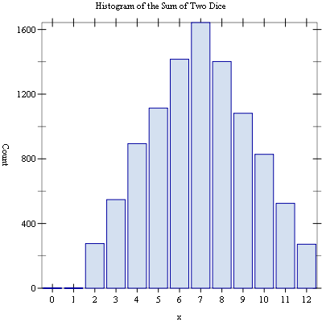

2 Using the Science Collection
This chapter describes how to use the Science Collection and introduces its conventions.
2.1 An Example
The following code demonstrates the use of the Science Collection by plotting a histogram of 10,000 trials of rolling two dice.
#lang racket (require (planet williams/science/random-source)) (require (planet williams/science/discrete-histogram-with-graphics)) (let ((s (make-random-source)) (h (make-discrete-histogram))) (random-source-randomize! s) (for ((i (in-range 10000))) (let ((die1 (+ (random-uniform-int 6) 1)) (die2 (+ (random-uniform-int 6) 1))) (discrete-histogram-increment! h (+ die1 die2)))) (discrete-histogram-plot h "Histogram of the Sum of Two Dice"))
The following figure shows the resulting histogram:

2.2 Loading Modules in the Science Collection
The Science Collection is a collection of modules each of which provides a specific area of functionality in numerical computing. Typical user code will only load the modules it requires using the require special form.
For example the code in Section 2.1 requires two of the modules from the Science Collection: random-source and discrete-histogram-with-graphics. This is specified using the following forms:
(require (planet williams/science/random-source)) (require (planet williams/science/discrete-histogram-with-graphics))
Each of these statements will load the corresponding module from the Science Collection—
There are two sub-collections of the Science Collection. These are:
special-functions
random-distributions
Loading modules from either of these sub-collections requires that the sub-collection be specified when using the require special form. For example, to load the module for the Gaussian random distribution, the following is used:
(require (planet williams/science/random-distributions/gaussian))
As a shortcut, the entire Science Collection can be loaded using one of the following, depending on whether or not the graphic routines are needed:
2.3 Graphics Modules
Support for the graphical functions within the modules of the Science Collection has been separated from the fundamental numerical computing functionality of the modules. This facilitates the use of the numerical computing functions in non-graphical environment or when alternative graphical presentations are desired.
By convention, when graphical functions are included for a specific numerical computing area, there are three modules that provide the functions:
module—
the basic numerical computing functions module-graphics—
the graphical functions module-with-grahics—
both the basic numerical computing and graphical functions
This might be used in implementing higher-level graphical interfaces.
In general, either the module or module-with-grahics module is loaded. However, the module-graphics module can be loaded when only the graphical routines are being referenced.
For example, the example code in Section 2.1 requires both the basic numerical computing and graphical functions for the discrete histogram functionality. Therefore, it loads the discrete-histogram-with-graphics module using the form:
(require (planet williams/science/discrete-histogram-with-graphics))
The graphical routines are implemented using the plot collection (PLoT) provided with Racket. The plot collection is, in turn, implemented using the Racket Graphics Toolkit MrED. Both of these modules are required to be present to use the graphical functions.